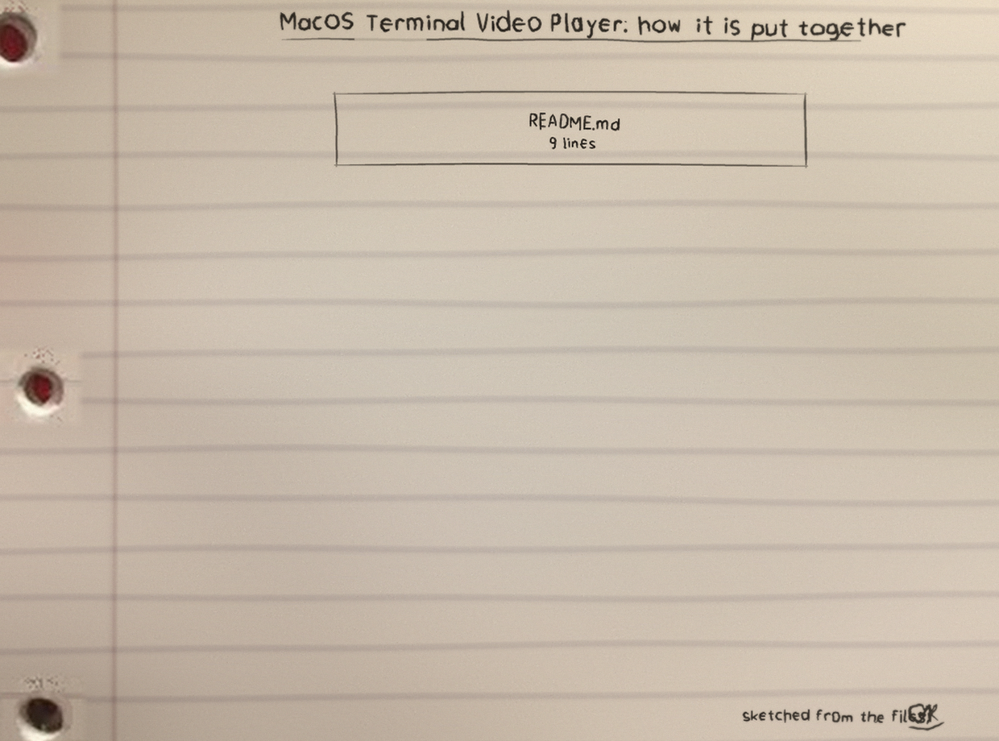
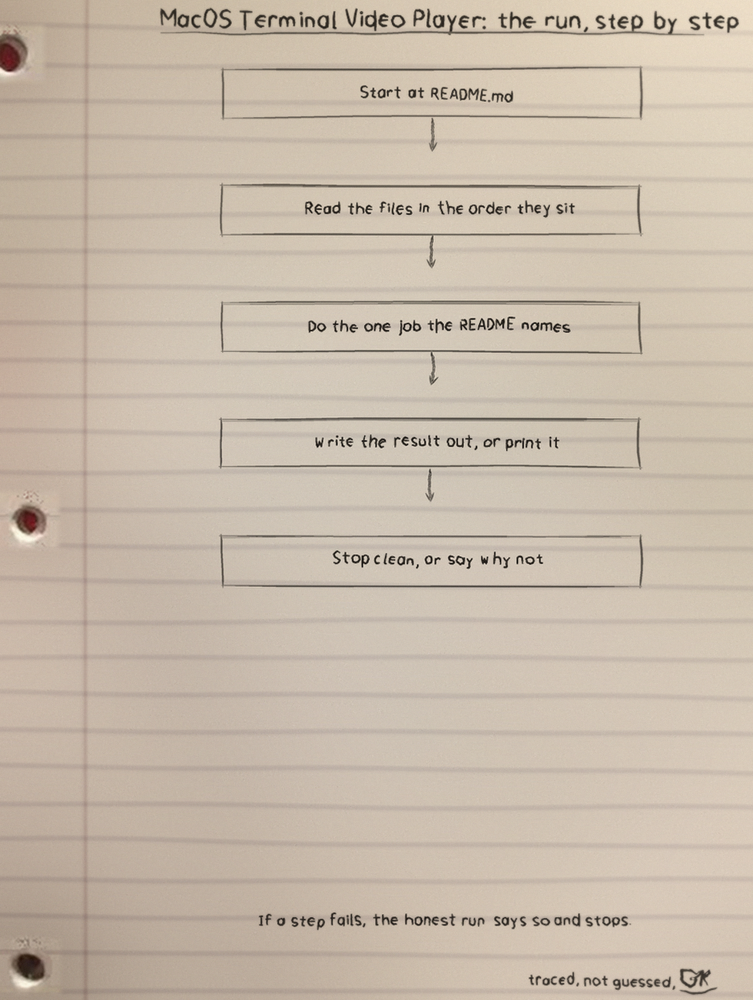
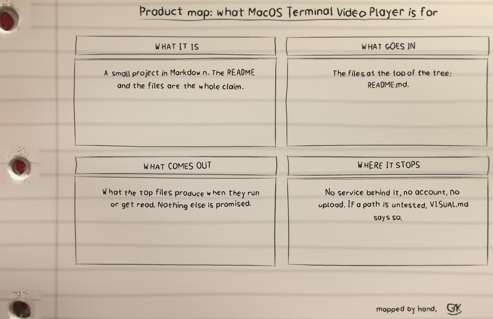

The Grater: Input
Built on FFmpeg (libavformat / libavcodec / libswscale): any format and codec FFmpeg can read, the player can play. Audio tracks are ignored; the best video stream is selected automatically.
brew install ffmpegThe Squeeze: Decoding and Scaling
src/video.cpp holds decoding, scaling, pacing, and terminal rendering. inc/video.h holds the VideoPlayer class interface, and src/main.cpp holds command line handling and terminal size detection. With no size options, the current terminal size is used (80x24 fallback when output is not a TTY).
./tvp <file> [--ascii] [--width COLS] [--height ROWS] [--frames N]--asciirenders a grayscale ASCII ramp instead of truecolor blocks.--frames Nstops after N frames (useful for testing).- Pressing Ctrl+C (or sending SIGTERM) stops playback cleanly: the player restores the cursor and resets colors before exiting.
The Fry: Half Blocks
Truecolor Unicode half blocks pack two vertical pixels into one terminal cell: the upper pixel sets one colour, the lower pixel sets the other, and the cell shows both at once. Two stacked film pixels go in; one character cell comes out.
./tvp movie.mp4
./tvp clip.mkv --ascii
./tvp trailer.webm --width 120 --height 40The Clock on the Wall: Pacing
Frames are shown against the video's own timestamps rather than as fast as the machine can push them. The test suite checks playback paced to the timestamps as one of its named behaviours.
The Rack: Build Notes
g++ src/main.cpp src/video.cpp -Iinc/ -I/opt/homebrew/include -std=c++17 -O3 -L/opt/homebrew/lib -lavformat -lavcodec -lavutil -lswscale -o tvpOn Linux, point -I / -L at your FFmpeg development headers and libraries instead (packages: libavformat-dev, libavcodec-dev, libavutil-dev, libswscale-dev). The code uses the stable FFmpeg API surface common to releases 6.x through 8.x.
Tests: test/run_tests.sh builds the player, generates a short test clip with the ffmpeg tool, and checks the behaviour end to end: both render modes, the frame limit, all frames rendered at end of file, playback paced to the timestamps, a clean Ctrl-C stop with the cursor restored, and the command line error exits (19 checks).
bash test/run_tests.shResizing the terminal changes the grid the frame is squeezed into; start the player at the window size you mean to watch at. The full sheet set is the MacOS-Terminal-Video-Player-Visuals folder in the repo.


